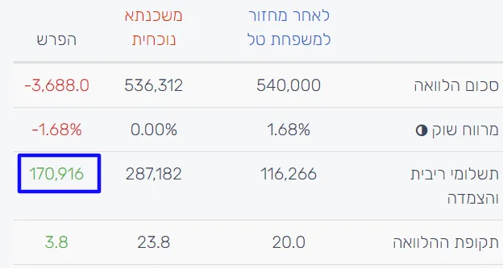
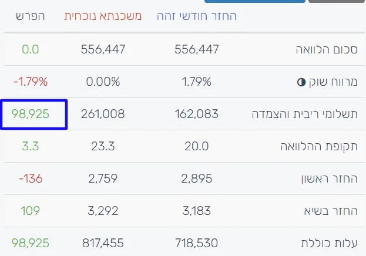

איך זה שבנפילות הגדולות בבורסה כולנו חששנו ובדקנו מה קורה לפנסיה שלנו,
אבל מה קורה במשכנתא שלכם, מתי בדקתם לאחרונה?
הנה כמה סיבות שבגללן תוכלו לחסוך הרבה מאוד כסף במשכנתא שלכם בביצוע “מחזור משכנתא.”
תכלס אני מבין אתכם!
מי שלא הולך לבדוק האם נכון עבורו למחזר את המשכנתא כנראה יש לו סיבה טובה😊
הנה כמה סיבות למה אתם לא בודקים את המשכנתא שלכם:
– חוזה צריך לקיים! ביום שלקיחת המשכנתא הייתה חגיגה גדולה או “סוף סוף זה מאחורינו”.
סוג של “אחת ולתמיד”.
חתמתם על חוזה ביום לקיחת המשכנתא לכמה עשרת שנים ואין לכם כל כוונה לגעת בחוזה, כי חוזה מקיימים!
– כמה שזה מורכב! זוכרים את ההליך המורכב של לקיחת המשכנתא?
מורכב מספיק כדי שתגידו לעצמכם “למה לי לסבול שוב?!”.
– ידע שחסר. איך פותחים בהליך שכזה ובכלל, לרוב האנשים אין מספיק הבנה כמה עשרות אלפים הם יכולים לחסוך במחזור משכנתא.
כך, שאם לא יודעים משהו, לא מרגישים בחסרונו. אחרי שתסיימו לקרא את כל המאמר לא תוכלו להגיד “לא ידעתי” 😊
– זמן. הסיבה האחרונה ואולי המשמעותית ביותר למה אנשים לא בודקים האם הם יכולים לחסוך המון כסף במשכנתא, היא ניהול הזמן שלכם.
כולנו גם ככה עמוסים בנטל הכלכלי…
שורות אלו נכתבות ובעוד כמה שעות כולנו נכנס לסגר השלישי שמשבש לנו את ניהול הזמן וסדר היום שלנו.
כך שרוב האנשים פסיביים במשכנתא שלהם.
כל עוד המשכנתא יורדת בזמן המתוכנן ואתם עומדים בתשלומים, רבים טועים בכך שאין צורך לעשות משהו שגם ככה מורכב, מבלבל וכשפונים לבנק בבקשה מגלים עוד שיש לפעמים גם – קנס!
באו נדבר תכלס על כסף
כאשר אתם פסיביים בתיק המשכנתא שלכם, אתם עושים טעות חמורה!
טעות כלכלית שעולה לכם ככל הנראה הרבה מאוד כסף.
אני לא מתכוון שכמו שאתם בטח מסתכלים בעו”ש שלכם, כמה ירד, מה צפוי לרדת ומחשבים אם אתם בסדר בניהול הכספים שלכם.
לא זו הכוונה, אבל בתיק משכנתא כן צריך לבחון אותה אחת לכמה זמן.
אז אני נשאל לא מעט… כל כמה זמן צריך לבחון את תיק המשכנתא??
ת’אמת זה כל כמה זמן, יותר מדויק שאגיד שאת המשכנתא יש לבחון כאשר מתרחשים אחד או יותר מהדברים הבאים.
מתי אנחנו יכולים לחסוך הרבה מאוד כסף במשכנתא
כשאני אומר “לחסוך הרבה מאוד כסף” אני רוצה להראות לכם את משפחת טל עם 3 ילדים
ושבוע שעבר חסכו לא פחות מאשר 170,000 ₪!
כך זה נראה

170,000 ₪ זו יכולה להיות משכורת שנתית של שני בני זוג יחד.
אז רגע לפני שאתם אומרים לעצמכם “למה לי כל הכאב ראש הזה” היזכרו במספר של 170,000 ₪ ותעשו את הצעד הראשון בלבחון מחדש את המשכנתא שלכם בלקרא את המאמר הבאה.
הסיבות שבגללן לרוץ למחזר את המשכנתא
1. שינוי ביכולת ההחזר של המשפחה
הרבה זוגות רוכשים בתחילת חייהם משכנתא עוד שההכנסות של בני הזוג נמוכות יחסית.
אחרי כמה שנים ההכנסות גדלו.
זה יכול להיות שהסתיימו מעונות הילדים שעברו לגנים – בתי ספר ותשלומים פחתו מעט,
זה עשוי להיות שנכנסתם לעבודה מסודרת יותר מאשר אותה עבודת סטודנט ועוד.
כך שאם אתם יכולים כל חודש להחזיר יותר על תשלומי המשכנתא, גם תקצרו את משך המשכנתא וגם תחסכו הרבה מאוד כסף! (אולי חיסכון של משכורת שנתית, זוכרים?).
רשמו את הכלל הבא, ככל שתחזירו כל חודש פחות לבנק, כך תשלמו יותר ריבית והצמדה למשך חיי המשכנתא.
אם משפחה חוסכת כל חודש 1,000 ₪ היא יכולה להחליט שהיא רוצה לקצר את משך זמן המשכנתא ובכך לחסוך פעמיים!
א. תשלומי ריבית וההצמדה לאורך פחות שנים
ב. נניח קיצרתם ב 5 שנים את המשכנתא, עכשיו תחסו את אותו כסף של חודש במקום לשלם לבנק, לחסוך לעתידכם.
אם יש לכם שינוי בהכנסות זו סיבה טובה לבדוק כדאיות למחזור משכנתא.
שינוי בתנאי השוק.
תנאי המשכנתא משתנים כל הזמן.
למשל, לקוחות שלי שלקחו לפני כמה שנים מסלול שנקרא “זכאות” היה 3% ריבית.
היום אותם לקוחות על אותו מסלול יכולים לקבל ריבית זכאות של 1.9%.
פער משמעותי של מעל 60,000 ₪ שרץ למשך 25 שנה על חצי מיליון שלקחו.
היום הריביות בשפל בהשוואה מלפני 10-12 שנים.
לפני מספר שנים ריבית קבועה שאיננה צמודה למדד (קל”צ) הייתם מקבלים 4% – 4.3%.
היום תוכלו לקבל על אותו מסלול 2.7%-3% ריבית.
פער שיכול להגיע למעל 100,000 ₪ לטווח של 30 שנה על חצי מיליון שלקחתם.
3. שווי הדירה גדל או יתרת ההלוואה קטנה
היום הבנק בישראל מוכן לתת עד ל 75% מימון משווי הדירה.
הבנק מתמחר את המשכנתא שלנו מול הסיכון שלו.
כמו: מי הלווים, איפה הנכס, כמה הוא שווה ועוד.
ככל שהבנק יצטרך לסכן פחות כסף, הוא יוכל לתת לכם ריביות ותנאים נוחים יותר.
בנוסף, דבר שרבים לא מכירים. בנק ישראל מחייב את הבנק שנותן לכם משכנתא,
להקצות כסף בצד כך שלא יהיה מצב שלבנק אין כסף במידה ומשהו ישתבש בדרך.
מושג זה נראה “הקצאת הון”.
לא אכנס לפירוט המושג שמדורג לפי אחוזי המימון שהבנק נתן לנו, כמו:
60% – 75% מימון
45%- 60% מימון
מתחת ל 45% מימון.
ככל שנבקש פחות מימון מהבנק, הבנק יאפשר לנו תנאים נוחים יותר.
למשל,
אם רכשנו דירה במיליון ₪ ובקשנו 750,000 ₪. משמע 75% מימון.
הבנק יתמחר את הסיכון שלו גבוה יחסית בגלל אחוזי המימון הגבוהים.
דבר שיתבטא ישירות בריביות שנקבל.
אם את אותה דירה במיליון ₪ נבקש מימון של 600,000 ₪ שזה 60% מימון.
נקבל ריביות נמוכות יותר על אותה דירה, עם אותו בנק בדיוק.
כך, שאם רכשתם דירה לפני מס שנים בשווי מיליון ₪ ב 75% מימון,
והיום ערך הדירה עלה נניח ל1,200,000 ₪ ירדתם למדרגה של עד 60% מימון ותקבלו על אותה משכנתא בדיוק, אותה דירה ריביות נמוכות יותר!
4. רכשתם דירה בקבוצת רכישה
בעבר קבוצת רכישה הייתה ע”מ לחסוך במס.
היום ההצדקה של קבוצת רכישה היא “חיסכון של הקבלן”.
את האמת אני לא אוהב ממש קבוצות רכישה וחושב שזה נחשב להשקעה מסוכנת ביותר
ויש כללים שחשוב מאוד לדעת לפני כניסה לעסקה מסוג זה.
נניח ואתם בוגרי מסלול קבוצת רכישה,
חשוב שתדעו שלא באמת בוצע עבורכם משא ומתן מול איזה שהוא בנק.
הבנק המלווה הוא הבנק שאתם חייבים לקחת דרכו משכנתא.
כשהבנק מבין שאין לו אף מתחרה, הוא יפנק אתכם בריבית גבוה ויודע שרובכם תהיו פסיביים ולא תעשו מחזור משכנתא.
שבוע שעבר פנה אלי לקוח בדיוק עם משכנתא כזו,
לאחר בחינה ראינו שהוא כבר שילם לבנק 80,000 ₪ אך בפועל יתרת החוב ירדה רק בכ 20,000 ₪ .
מתוך בדיקה שערכתי עם אותו לקוח, על כמעט אותו החזר חודשי הוא יכול לחסוך כ 100,000 ₪ !

לסיכום
משכנתא צריך לבדוק כאשר אחד או יותר מתנאים אלו משתנים:
יכול החזר חודשי גדלה,
שווי הדירה גדל או יתרת ההלוואה קטנה,
תנאי השוק השתנו ,
נגמרה הקבוצת רכישה.
את בדיקה כמה תחסכו בביצוע מחזור המשכנתא תוכלו לעשות אצלי עוד לפני סוף שנה ללא עלות וכך תדעו האם אתם עשויים לחסוך מאוד ואלפי שקלים.
אגב,
אם אתם קוראים את שורות אלו ביום ראשון 27.12.2020 בשעות הבוקר (09:00),
סביר להניח שאני בבנק חוסך לזוג נוסף לא פחות מ 280,000 ₪ !!!!